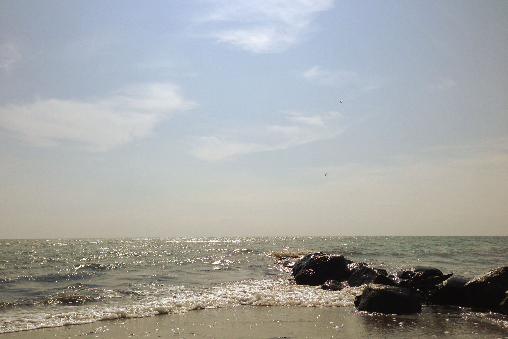

<!DOCTYPE html>
<html>
  <head>
    <title>Ole Keding</title>
    <meta charset="utf-8" />
    <meta content="Jens Hinrichs" name="author" />
    <meta content="Ole Keding" name="keywords" />
    <meta content="width=device-width, initial-scale=1" name="viewport" />
    <link href="/favicon.png" rel="icon" type="image/png" />
    <link href="http://yui.yahooapis.com/pure/0.5.0/pure-min.css" rel="stylesheet" />
    <link href="http://yui.yahooapis.com/pure/0.5.0/grids-responsive-min.css" rel="stylesheet" />
    <link href="css/main.css" rel="stylesheet" />
    <script src="http://code.jquery.com/jquery-2.1.3.min.js"></script>
    <script src="http://code.jquery.com/ui/1.11.3/jquery-ui.js"></script>
    <script src="js/jquery.panelSnap.js"></script>
    <script src="js/main.js"></script>
  </head>
</html>
<body>
  <header>
    <div class="pure-menu pure-menu-open pure-menu-horizontal pure-menu-fixed">
      <ul>
        <li>
          <a data-panel="einblicke" href="#einblicke">Einblicke</a>
        </li>
        <li>
          <a data-panel="ausblicke" href="#ausblicke">Ausblicke</a>
        </li>
        <li>
          <a data-panel="kontakt" href="#kontakt">Kontakt</a>
        </li>
        <li>
          <a href="#">Englisch</a>
        </li>
      </ul>
    </div>
  </header>
  <section class="pure-g" data-panel="1" id="start">
    <div class="pure-u-md-1-24 pure-u-lg-1-5"></div>
    <div class="pure-u-1 pure-u-md-22-24 pure-u-lg-3-5">
      <div class="l-box">
        <h1>
          Ole Keding
        </h1>
        Strategie, Entwicklung, Kreativität<br>
        Wissen, Management, Design, Digitales<br>
        Komplexität, Leichtigkeit, Nachhaltigkeit
      </div>
    </div>
    <div class="pure-u-md-1-24 pure-u-lg-1-5"></div>
  </section>
  <section class="pure-g">
    <div class="pure-u-1">
      
    </div>
  </section>
  <section class="pure-g" data-panel="einblicke" id="einblicke">
    <div class="pure-u-md-1-24 pure-u-lg-1-5"></div>
    <div class="pure-u-1 pure-u-md-22-24 pure-u-lg-3-5">
      <div class="l-box">
        <a name="einblicke"></a>Ich entwickle bei Pilot in Hamburg innovative Produkte, kreative Konzepte und strategische Ideen.
        Ich helfe dabei, komplizierte Dinge verständlich oder komplexe Prozesse schlank und zielführend zu gestalten.<br /><br />Ich bin promovierter Kommunikationswissenschaftler, habe Politikwissenschaft und Psychologie an der Universität Hamburg studiert. 
        Ich habe eine Schwäche für das Aneignen von Wissen und pflege eine ausgeprägte Neugier. <br /><br />Und ich kann mich ganz besonders für Ästhetik, Mutter Natur und innere Ruhe begeistern.
      </div>
    </div>
    <div class="pure-u-md-1-24 pure-u-lg-1-5"></div>
  </section>
  <section>
    <div class="green"></div>
  </section>
  <section class="pure-g" data-panel="ausblicke" id="book">
    <div class="pure-u-md-1-24 pure-u-lg-1-5"></div>
    <div class="pure-u-1 pure-u-md-22-24 pure-u-lg-3-5">
      <div class="l-box">
        <a name="ausblicke"></a>Ich habe ein wissenschaftliches Buch über Strategie, Komplexität und Online-Kommunikation geschrieben. 
        <div class="pure-g">
          <div class="pure-u-1 pure-u-md-1-3">
            
          </div>
        </div>
      </div>
    </div>
    <div class="pure-u-md-1-24 pure-u-lg-1-5"></div>
  </section>
  <section class="pure-g" data-panel="book2" id="booklinks">
    <div class="pure-u-md-1-24 pure-u-lg-1-5"></div>
    <div class="pure-u-1 pure-u-md-22-24 pure-u-lg-3-5">
      <div class="l-box">
        <dl>
          <dt>
            Buch
          </dt>
          <dd>
            "Online Kommunikation von Organisationen - Strategisches Handeln unter komplexen Bedingungen"<br />Wissenschaftlicher Band
          </dd>
          <dt>
            Beitrag
          </dt>
          <dd>
            "Publishing 2.0"<br />Thematisiert dies das
          </dd>
        </dl>
      </div>
    </div>
    <div class="pure-u-md-1-24 pure-u-lg-1-5"></div>
  </section>
  <section class="pure-g">
    <div class="pure-u-1">
      
    </div>
  </section>
  <section class="pure-g" data-panel="kontakt" id="links">
    <div class="pure-u-md-1-24 pure-u-lg-1-5"></div>
    <div class="pure-u-1 pure-u-md-22-24 pure-u-lg-3-5">
      <div class="l-box">
        <a name="kontakt"></a>Schnelle Gedanken auf <a href="https://twitter.com/olekeding">Twitter</a>, ausführliche Gedanken auf <a href="https://medium.com/@olekeding">Medium</a>, Präsentationen auf <a href="http://www.slideshare.net/olekeding1">Slideshare</a>, Lesegewohnheiten auf <a href="https://www.goodreads.com/user/show/37494555-ole-keding">GoodReads</a>, Inspiration auf <a href="#">Pinterest</a>, Lebenslauf auf <a href="https://www.xing.com/profile/Ole_Keding">Xing</a>, CV auf <a href="https://www.linkedin.com/profile/view?id=67362831">LinkedIn</a>. Natürlich gibt es ein  <a href="imprint.html">Impressum</a> und ich bin auch per <a href="mailto:ole.keding@googlemail.com">Mail</a> erreichbar.
      </div>
    </div>
    <div class="pure-u-md-1-24 pure-u-lg-1-5"></div>
  </section>
</body>
